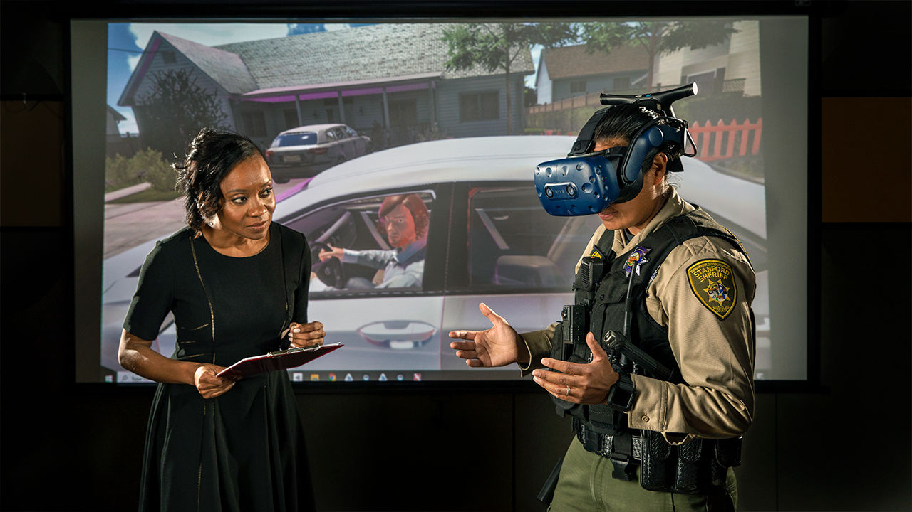

| Article: hr magazine "The state of unconscious bias in the UK" by Paula Whelan |
Article: able magazine "Unconscious Bias against Disabled higher now than before Paralympics" |
|---|---|
| "Only 51% of FTSE 100 companies have directors from black, Asian and minority ethnic (BAME) backgrounds, and only 8% of the total director population in the UK is BAME. By contrast, UK society comprises 14% non-white ethnic groups." |
"A new study by the Employers Network for Equality & Inclusion (enei) today suggests that levels of unconscious bias against disabled people are almost 8% higher today than before the Paralympic Games of 2012." |
| Article: employers network for equality and inclusion (enei) "5 ways to challenge unconscious bias in the workplace" |
Article: science mag "Meet the psychologist exploring unconscious bias—and its tragic consequences for society" by Douglas Starr |
| "To maximise productivity and results at work, we need to challenge our unconscious bias." |
"Jennifer Eberhardt has devised virtual reality programs for training police to conduct traffic stops more respectfully."  |
| load more... | |